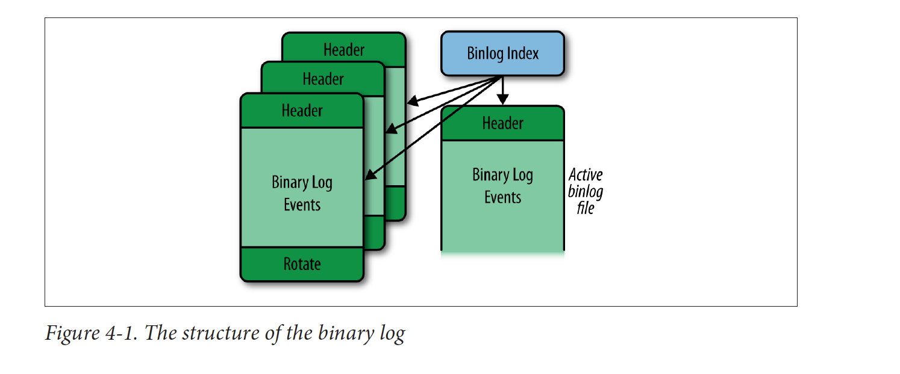
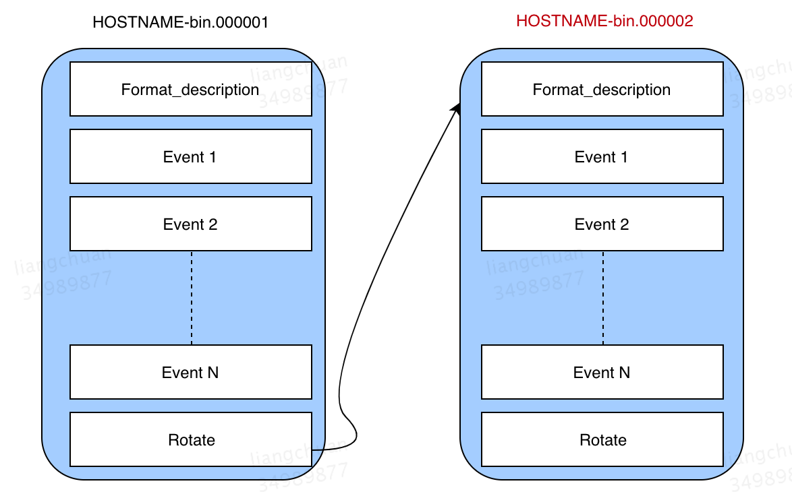
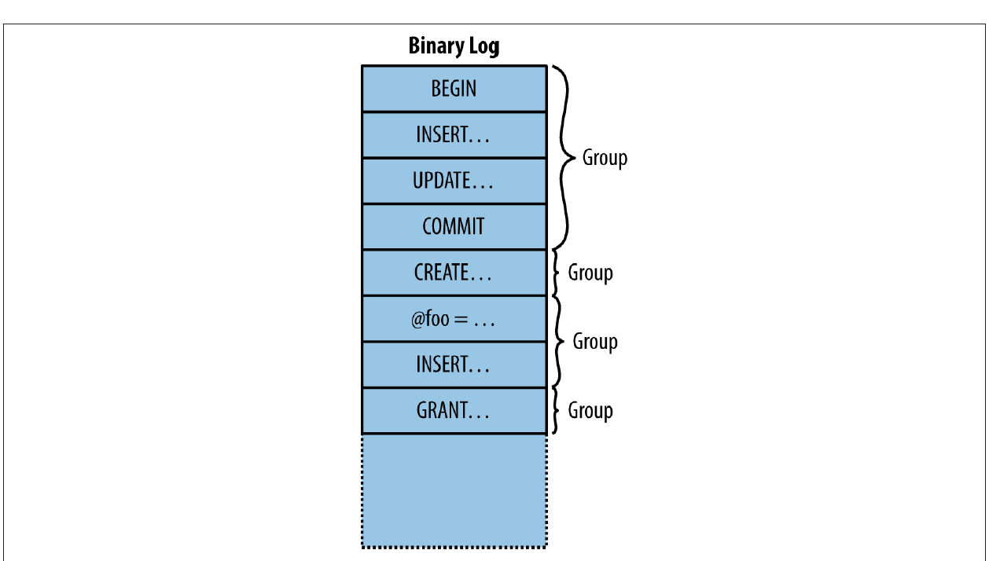
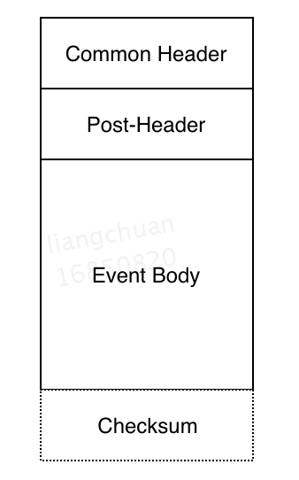

Binlog
初始定义
BinLog 是记录 MySQL 实例数据变更的一个组件，日志中包含了一系列变更数据的操作，例如变更表结构、删除数据、更改/添加数据等 DML、DDL。这些操作在 BinLog 中统称为事件。
BinLog 记录什么，不记录什么
BinLog 也会记录一些可能会发生数据变更的事件，例如没有找到对应行的 Delete 操作。
BinLog 不会记录纯查询，如 Select 和 Show。那要查询所有语句的记录怎么办（比如要分析长事务）？需要查找通用查询日志。
用途
- 主从同步：在主从同步的过程中，Binlog用于记录主库的数据变更，然后这些记录被主库内的线程发送至从库。从库的工作线程再把接收到的变更事件放到从库上执行，完成数据同步。主从同步通常被视为提升数据库吞吐能力的一种方法，因此Binlog是必不可少的环节。
- 数据恢复： 在生产环境中，总是会有意外导致数据丢失。在一些数据恢复的场景中，Binlog是必不可少的。当数据库从备份中恢复的时候，binlog中所记录的信息会在恢复后的数据上执行，补齐备份数据中未备份的记录。注意，这里的数据恢复不包括数据回滚，回滚依赖于 undo-log。
BinLog 结构

从上图可以看出，一个完整的binlog由两种文件组成
- 索引文件(Index File)：
索引文件用于跟踪多个binlog文件，便于主库创建新的binlog文件。索引文件中的每一行记录着所有关联和它关联的binlog文件名。在系统中，索引文件的文件名为{Host名}-bin.index
- 日志文件(Binlog file)：

日志文件是binlog的主体，如上图所示，它是由一系列事件(Binary Log Events)组成。在系统中，文件名为{Host名}-bin.NNNNNN。 后缀为六个数字用于区分不同的日志文件。
日志文件的开头记录的是的是 Format_description 事件，这个事件记录主库的信息和日志文件的状态。如果主库突然宕机或者重启，主库会重新创建一个日志文件然后在开头写入Format_description。
当主库记录完成变更事件后，主库会写入Rotate事件。Rotate事件会指定下一个日志文件的文件名和读取事件的起始点。
BinLog 分组
除开上述的Format_description事件和Rotate事件，日志文件都会把其他的变更事件进行分组(Group)。在MySQL中，每一个事务会被分成一组，组中包含了这个事务下执行的所有语句。一些非事务性语句会被单独分成一组，如Create和Alter语句等。如下图所示：

MySQL能确保每一组变更的原子性，要么不执行，要么执行完每一个组的所有语句。在主从同步中，如果从库在同步过程突然中止，当从库重新启动后，从库会重新执行一个组的变更，而不是重新执行被终止的语句。如图中所示，当update被终止后，从库下次启动时会从Begin开始执行而不是从update开始执行（原子性会从 begin 开始，所以事务里的语句总是幂等的）。
日志格式
上个部分我们介绍了binlog日志的结构，知道每一个binlog日志是由多个事件组成的。为了方便阐述，文中默认每个事件都是执行的语句或者一个完整事务。在早期的MySQL版本中，这是binlog日志唯一的格式。自从MySQL5.1起，日志的格式增加到了三种：
Statement-based（我们实际上最习惯的是这种语句）： 这是MySQL默认的日志格式。在这个格式下，binlog日志中记录的是变更数据库的执行语句和事务。
Row-based: 在这个格式下，binlog日志中记录的是发生变更的数据行。
Mixed-logging: 这个格式是前两种格式的混合版，主库会根据执行的语句来决定binlog日志中记录的内容，可以是具体的行，也可以是执行的语句。
其实 Row-based 的 binlog 的设计逻辑近于 balance 数据（或者状态数据），而 Statement-based 的设计逻辑近于 transaction 数据（或者流水数据）。
每个日志格式都有其对应的优缺点，因为mixed-logging在实际生产环境中不常用。在这里仅对row-based和statement-based做比较，总结如下表：
| 格式 | 优点 | 缺点 |
|---|---|---|
| Statement-based | 1. 较少的日志大小 2. 因为记录了所有执行语句，所以可以方便的做后期审计。 | 不适用于包含以下函数的语句：如USER(), UUID(), UUID_SHORT(), NOW() |
| 不适用于不稳定的语句，如带Limit的Delete和Update语句 | ||
| Row-based | 1. 记录了所有实际变更的数据，准确性高 | |
| 2. 对于Insert, update 和 delete语句，所需要的行锁大大降低 | 日志文件大，IO耗费较大 |
日志事件结构

每个 binlog 事件由四个部分组成：
- 通用 Header：这里存放事件的基本信息：事件类型和事件数据大小。
- Post Header：存放特定事件类型的相关信息。
- 事件实体：存储事件的数据，如执行过的语句和变更的实际数据。
- Checksum：MySQL 5.6 新增的功能，用作检查数据是否损坏。
主从同步
mysql主从复制需要三个线程：master（binlog dump thread）、slave（I/O thread 、SQL thread）：
binlog dump线程：主库中有数据更新时，根据设置的binlog格式，将更新的事件类型写入到主库的binlog文件中，并创建log dump线程通知slave有数据更新。当I/O线程请求日志内容时，将此时的binlog名称和当前更新的位置同时传给slave的I/O线程。
I/O线程：该线程会连接到master，向log dump线程请求一份指定binlog文件位置的副本，并将请求回来的binlog存到本地的relay log中。
SQL线程：该线程检测到relay log有更新后，会读取并在本地做redo操作，将发生在主库的事件在本地重新执行一遍，来保证主从数据同步。

- 主库写入数据并且生成binlog文件。该过程中MySQL将事务串行的写入二进制日志，即使事务中的语句都是交叉执行的（binlog 的生成有将事物序列化的机制）。
- 在事件写入二进制日志完成后，master 通知存储引擎提交事务（binlog 也是 WAL！）。
- 从库服务器上的 IO 线程连接 Master 服务器，请求从执行 binlog 日志文件中的指定位置开始读取 binlog 至从库。
- 主库接收到从库的 IO 线程请求后，其上复制的 IO 线程会根据 Slave 的请求信息分批读取 binlog 文件然后返回给从库的IO线程。
- Slave服务器的IO线程获取到 Master 服务器上 IO 线程发送的日志内容、日志文件及位置点后，会将binlog日志内容依次写到 Slave 端自身的 Relay Log（即中继日志）文件的最末端，并将新的 binlog 文件名和位置记录到 master-info 文件中，以便下一次读取 master 端新binlog日志时能告诉 Master 服务器从新 binlog 日志的指定文件及位置开始读取新的 binlog 日志内容。
- 从库服务器的 SQL 线程会实时监测到本地Relay Log中新增了日志内容，然后把 RelayLog 中的日志翻译成SQL并且按照顺序执行SQL来更新从库的数据。
- 从库在relay-log.info中记录当前应用中继日志的文件名和位置点以便下一次数据复制。
主从复制的线程流程，和 Redis 的线程有点像。

Binlog是主从同步中的重要一环，如上图所示。
不同的binlog日志格式会影响从库的同步方式。在statement-based格式下，从库是直接执行binlog日志中读取到的语句或者事务。在row-based格式下，从库是根据日志内容直接更新对应的数据。
MySQL默认的日志格式是statement-based。在大多数主从同步的场景下，日志格式采用row-based（大多数情况下不使用默认配置），最主要的原因是row-based格式下，日志内容都是真实发生变更的数据，从库的数据准确性有很高的保证。
数据恢复
在生产环境中，数据很有可能发生意外丢失。人为的操作失误往往会导致“删库跑路”的结局。为了应对各种意外的情况，数据库会周期性的做备份。当数据意外丢失后，备份数据可以拿过来恢复。然而，即使数据做了备份，也不能完全恢复到丢失那一刻的数据。
假设某数据库每一个整点备份一次，上午10点数据库备份了一次，而10：30分，数据库突然丢失数据。
这时候我们会立刻拿备份数据导入到生产数据库中，然而我们只能恢复到上午10点时的数据，10：00 ~
10：30那段时间的数据并没有被导入备份，还是会缺失一部分数据。所以，这30分钟的数据怎么恢复呢？
这里就用到了 MySQL 的Point-In-time recovery(简称PITR)功能，PITR是用于恢复某个时间点的失效数据，用于弥补备份时间点到失效时间点这段数据“真空期”，实现这个功能的核心是binlog日志文件。
在详解binlog日志时我们了解到，binlog日志中存放着数据库所有的变更。PITR的原理很简单，就是将binlog内存储的变更数据重新执行一遍。需要恢复数据时，用mysqlbinlog命令执行binlog日志的内容。
1 | -- mysqlbinlog 也可以手动执行 |
PITR可以选定时间范围和位置范围来选择性恢复数据：
- 时间范围模式，使用–start-datetime或者–stop-datetime 变量。下图的含义是读取该binlog日志stop-datetime之前的所有变更：
1 | mysqlbinlog --stop-datetime="2005-04-20 9:59:59" \ |
- 日志位置模式，使用–start-position和 –stop-position 变量选择日志内的起始位置，如下图：
1 | -- 指定停止位置 |
Binlog 不同于 Redo log
redo log有着和binlog 类似的功能，它也记录了变更数据库的信息，但是它和binlog还是有区别的，具体区别如下：
| 日志类型 | Bin Log | Redo Log |
|---|---|---|
| 层次 | 引擎无关（MySQL 总是有 Bin Log） | InnoDB 特有 |
| 作用 | 主从复制和 PITR | 数据库崩溃后的恢复，不可指定具体时间点（单独恢复若干个事务） |
| 内容 | 逻辑日志，记录语句的原始逻辑（更加接近我们熟悉的操作日志） | 物理日志，记录某个数据页上的修改 |
丢失 binlog 造成的事故
- binlog 的文件如果有滚动功能，就有限期清理的功能。如果限期清理的日志不足以提供 PITR 的所有支持，则无法支持备份的还原。也无法支持主从同步。如果数据在从库上丢了，在主库上进行回滚也是一种思路。
防止 binlog 丢失可以开启双 1 配置，不过写入性能最差。
innodb_flush_log_at_trx_commit
如果innodb_flush_log_at_trx_commit设置为0：log buffer将每秒一次地写入log file中，并且log file的flush(刷到磁盘)操作同时进行。该模式下，在事务提交的时候，不会主动触发写入磁盘的操作;
如果innodb_flush_log_at_trx_commit设置为1：每次事务提交时MySQL都会把log buffer的数据写入log file，并且flush(刷到磁盘)中去;
如果innodb_flush_log_at_trx_commit设置为2：每次事务提交时MySQL都会把log buffer的数据写入log file，但是flush(刷到磁盘)操作并不会同时进行。该模式下,MySQL会每秒执行一次 flush(刷到磁盘)操作。
注意：由于进程调度策略问题,这个”每秒执行一次 flush(刷到磁盘)操作”并不是保证100%的”每秒”。
sync_binlog
sync_binlog 的默认值是0，像操作系统刷其他文件的机制一样，MySQL不会同步到磁盘中去而是依赖操作系统来刷新binary log。
当sync_binlog =N (N>0) ，MySQL 在每写 N次 二进制日志binary log时，会使用fdatasync()函数将它的写二进制日志binary log同步到磁盘中去。
注意：如果启用了autocommit，那么每一个语句statement就会有一次写操作；否则每个事务对应一个写操作。
双 1 配置意味着每个事务的提交和每个 buffer 的写入都是积极写入磁盘中的，任何 buffer 层的惰性配置都不生效。
innodb_flush_log_at_trx_commit 控制 redo log。
sync_binlog 控制 binlog。
主从延迟与同步机制
在2000年，MySQL 3.23.15版本引入了Replication。Replication作为一种准实时同步方式，得到广泛应用。这个时候的Replicaton的实现涉及到两个线程，一个在Master，一个在Slave。Slave的I/O和SQL功能是作为一个线程，从Master获取到event后直接apply，没有relay log。这种方式使得读取event的速度会被Slave replay速度拖慢，当主备存在较大延迟时候，会导致大量binary log没有备份到Slave端。
在2002年，MySQL 4.0.2版本将Slave端event读取和执行独立成两个线程（IO线程和SQL线程），同时引入了relay log。IO线程读取event后写入relay log，SQL线程从relay log中读取event然后执行。这样即使SQL线程执行慢，Master的binary log也会尽可能的同步到Slave。当Master宕机，切换到Slave，不会出现大量数据丢失。
在2010年MySQL 5.5版本之前，一直采用的是这种异步复制的方式。主库的事务执行不会管备库的同步进度，如果备库落后，主库不幸crash，那么就会导致数据丢失。于是在MySQL在5.5中就顺其自然地引入了半同步复制，主库在应答客户端提交的事务前需要保证至少一个从库接收并写到relay log中。那么半同步复制是否可以做到不丢失数据呢？下面分析。
在2016年，MySQL在5.7.17中引入了一个全新的技术，称之为InnoDB Group Replication。目前官方MySQL 5.7.17基于Group replication的全同步技术已经问世，全同步技术带来了更多的数据一致性保障。相信是未来同步技术一个重要方向，值得期待。MySQL 5.7 Group Replication。
主从复制机制：
- 对于异步复制，主库将事务Binlog事件写入到Binlog文件中，此时主库只会通知一下Dump线程发送这些新的Binlog，然后主库就会继续处理提交操作，而此时不会保证这些Binlog传到任何一个从库节点上。
- 对于全同步复制，当主库提交事务之后，所有的从库节点必须收到，APPLY并且提交这些事务，然后主库线程才能继续做后续操作。这里面有一个很明显的缺点就是，主库完成一个事务的时间被拉长，性能降低。
- 对于半同步复制，是介于全同步复制和异步复制之间的一种，主库只需要等待至少一个从库节点收到并且Flush Binlog到Relay Log文件即可，主库不需要等待所有从库给主库反馈。同时，这里只是一个收到的反馈，而不是已经完全执行并且提交的反馈，这样就节省了很多时间。
所以关键在 dump 线程。
主从延迟的原因
根据前面主从复制的原理可以看出，两者之间是存在一定时间的数据不一致，也就是所谓的主从延迟。我们来看下导致主从延迟的时间点：
主库 A 执行完成一个事务，写入 binlog，该时刻记为T1.
传给从库B，从库接受完这个binlog的时刻记为T2.
从库B执行完这个事务，该时刻记为T3.
那么所谓主从延迟，就是同一个事务，从库执行完成的时间和主库执行完成的时间之间的差值，即T3-T1。
我们也可以通过在从库执行show slave status，返回结果会显示seconds_behind_master，表示当前从库延迟了多少秒。
seconds_behind_master如何计算？
每一个事务的binlog都有一个时间字段，用于记录主库上写入的时间
从库取出当前正在执行的事务的时间字段，跟当前系统的时间进行相减，得到的就是seconds_behind_master，也就是前面所描述的T3-T1。
是T2-T1么？
NO。正常情况下，如果网络不延迟，那么日志从主库传给从库的时间是相当短，所以T2-T1可以基本忽略。
是T3-T2 么？
YES，最直接的影响就是从库消费中转日志（relaylog）的时间段，而造成原因一般是以下几种：
1、从库的机器性能比主库要差
比如将20台主库放在4台机器，把从库放在一台机器。这个时候进行更新操作，由于更新时会触发大量读操作，导致从库机器上的多个从库争夺资源，导致主从延迟。
不过，目前大部分部署都是采取主从使用相同规格的机器部署。
2、从库的压力大
按照正常的策略，读写分离，主库提供写能力，从库提供读能力。出于对于主库的敬畏之心，将进行大量查询放在从库上，结果导致从库上耗费了大量的CPU资源，进而影响了同步速度，造成主从延迟。
对于这种情况，可以通过一主多从，分担读压力；也可以采取binlog输出到外部系统，比如Hadoop，让外部系统提供查询能力。
3、大事务的执行
一旦执行大事务，那么主库必须要等到事务完成之后才会写入binlog。
如：主库执行了一条insert … select非常大的插入操作，该操作产生了近几百G的binlog文件传输到只读节点，进而导致了只读节点出现应用binlog延迟。
因此，DBA经常会提醒开发，不要一次性地试用delete语句删除大量数据，尽可能控制数量，分批进行。
我们在生产上曾经见过，执行大规模的表压缩，主库机器性能比从库要好，导致从库执行这个改表的事务造成延迟。所以拆小事务不只是为了连接和防止表死锁，还可以防止从库延迟过大。
4、主库的DDL(alter、drop、repair、create)
1、只读节点与主库的DDL同步是串行进行，如果DDL操作在主库执行时间很长，那么从库也会消耗同样的时间，比如在主库对一张500W的表添加一个字段耗费了10分钟，那么只读节点上也会耗费10分钟。
2、只读节点上有一个执行时间非常长的的查询正在执行，那么这个查询会堵塞来自主库的DDL，读节点表被锁，直到查询结束为止，进而导致了只读节点的数据延迟。
5、锁冲突
锁冲突问题也可能导致从机的SQL线程执行慢，比如从机上有一些select …. for update的SQL，或者使用了MyISAM引擎等。
6、从库的复制能力
一般场景中，因偶然情况导致从库延迟了几分钟，都会在从库恢复之后追上主库。但若是从库执行速度低于主库，且主库持续具有压力，就会导致长时间主从延迟，很有可能就是从库复制能力的问题。
回头再看下主从复制的流程，主要看下红色的箭头：
1、上面两个箭头分别表示的是客户端写入主库和sql_thread执行relaylog，若粗细表示并发度，可见主库明显高于从库。
2、从库上的执行，即sql_thread更新逻辑，在5.6版本之前，是只支持单线程，那么在主库并发高、TPS高时，就会出现较大的主从延迟。
因此，在随后演进的版本中，官方的 MySQL提出了不断改进的多线程复制方法，用于减少主从延迟。
并行复制的原理
MySQL 的主库往往是并发写，所以如果从库不能并行复制的话，高并发的业务场景下很容易导致主从延迟很高。
多线程复制

图中的coordinator是上图的sql_thread，但其功能已不再是更新数据，而是负责读取中转日志和分发事务，进行更新操作的是work线程，该线程数量由slave_parallel_workers控制。
coordinator作为重要的一环，那么其进行分发是具有一定的要求：
不能造成更新覆盖，要求更新同一行的两个事务须分配到同一个work
如：更新同一行的两个事务被分配给了两个work，由于各个work之间是独立执行，就有可能出现第二个事务比第一个事务先执行，结果两个事务在主库和从库的执行顺序不一致，导致主从不一致。
同一个事务不能被拆分，须分配到同一个work
如：同一个事务更新表1和表2的各一行，分配到两个work，最终执行结果一致，但如果在表1执行完成的瞬间，来一个查询请求，则就会看到事务执行到一半的结果，破坏了事务的隔离性。
a、按库并行
这是MySQL最先推出的并行复制策略，模型如下：

如图所示，每个 worker 线程对应一个 hash 表，用于保存当前正在这个worker的执行队列里的事务所涉及到的库。其中hash表里的key是数据库名，用于决定分发策略。该策略的优点是构建hash值快，只需要库名，同时对于binlog的格式没有要求。
但这个策略的效果，只有在主库上存在多个DB，且各个DB的压力均衡的情况下，这个策略效果好。因此，对于主库上的表都放在同一个DB或者不同DB的热点不同，则起不到多大效果。
b、redo log 组提交 (group commit) 优化
最先使用这个特性的是MariaDB，该特性如下：
1、能够同一组里提交的事务，定不会修改同一行；
2、主库上可以并行执行的事务，从库上也一定可以并行执行。
具体是如何实现：
1、在同一组里面一起提交的事务，会有一个相同的commit_id，下一组为commit_id+1，该commit_id会直接写道binlog中；
2、在从库使用时，相同commit_id的事务会被分发到多个worker并行执行，直到这一组相同的commit_id执行结束后，coordinator再取下一批。
该实现逻辑，就好比模拟了主库的并行模式，但仔细分析对比，其并没有真正做到模拟主库的并行模式，可以看下图：

从图中可以看出主库在事务提交完后下一组事务很快就会进入commit状态，而从库需要等到第一组事务完全执行完成后，第二组事务才能开始执行。这种模式下，大事务的劣势尤为明显，比如TRA2是个大事务，在从库执行时，其他两个事务均已完成，但TRA2未完成，那么需等待他完全执行完，下一组才能执行，导致这段时间内只有一个work线程运行，造成资源浪费。
后续MySQL也提供了相应的类似功能，由参数slave-parallel-type进行控制，当其配置为LOGICAL_CLOCK即运行类似于MariaDB的策略，但 MySQL 在其并行策略基础上进行了优化。
MariaDB的核心是”所有处于commit“状态的事务可以并行，而MySQL认为只要是”同时处于prepare状态，或处于prepare与commit状态之间“的事务，就可以在从库里并行执行。因为只要是到达了prepare阶段，表示事务已经通过了锁冲突的检测。
具体怎么提升并发度，这里就涉及到了binlog组提交的两个参数（可以去了解一下binlog提交的过程）：
binlog_group_commit_sync_delay ，表示延迟多少微秒调用fsync；
binlog_group_commit_sync_no_delay_count， 表示累积多少次以后才调用fsync。
通过控制这两个参数，制造更多同时处于prepare的事务，也就是让主库提交慢点，从库执行快点，从而增加从库复制的并行度。
c、WRITESET的并行复制
MySQL5.7.22提出了一个基于WRITESET的并行复制，通过binlog-transation-dependency-tracking进行控制，有三种模式：
COMMIT_ORDER，即redo log 组提交 (group commit) 优化。
WRITESET，表示对于事务中关联到的每一行，计算出hash值，组成writeset。如果两个事务没有操作相同的行，即writeset没有交集，可以并行。hash值通过”库名+表名+索引名+值“计算，若表上还有其他唯一索引，那么对每一个唯一索引，在insert语句上会多一个hash值。
WRITESET_SESSION，在WRITESET上多一层限制，即在主库上同一个线程执行的两个事务，在从库执行时，也要保证相同的先后顺序。
该策略的优点是：
WRITESET在主库生成后写在binlog中，在从库执行时，不需要解析，节省工作量
不需扫整个binlog来决定分发到哪个worker
从库的分发策略不依赖于binlog内容，对于statement格式也适合。
怎么减少主从延迟
主从同步问题永远都是一致性和性能的权衡（不要期望主库执行大规模的写操作，否则读会受到影响），得看实际的应用场景，若想要减少主从延迟的时间，可以采取下面的办法：
降低多线程大事务并发的概率，优化业务逻辑
优化SQL，避免慢SQL，减少批量操作，建议写脚本以 update-sleep 这样的形式完成。
提高从库机器的配置，减少主库写binlog和从库读binlog的效率差。
尽量采用短的链路，也就是主库和从库服务器的距离尽量要短（同机房部署、同城部署），提升端口带宽，减少binlog传输的网络延时。
实时性要求的业务读强制走主库，从库只做灾备，备份。
Redo/Undo Log
在 MySQL 里，既有数据文件（data file），也有日志文件（log file）。日志在内存中也是有缓存 Log Buffer，也有磁盘文件 log file。Redo Log 和 Undo Log 都是 log file 的一种。
当数据 crash-recovery 时：
- 通过 Redo Log 将所有已经在存储引擎内部提交的事务应用 Redo log 恢复。-这提供了原子性（保证事务不会部分成功）和持久性（数据最终能存到 data file 里）
- 所有已经 prepared 但是没有 commit 的 transactions 将会应用 Undo log 做 roll back，也保证了原子性和隔离性（通过对 MVCC 的支持）。
事务执行时会先写 undo log，再执行 statement，再写 redolog，事务执行完前的一瞬间写 binlog。
acid 里面的 c 特指数据完整性（三大完整性），与这两种 log 无关系。
Redo Log
Redo Log 是重做日志，提供前滚操作。Redo Log 记录某数据块被修改后的值，可以用来恢复未写入 data file 的已成功事务更新的数据。
Redo Log 通常是物理日志，记录的是数据页的物理修改，而不是某一行或某几行修改成什么样。它用来恢复提交后的物理数据页（恢复数据页，且只能恢复到最后一次提交的位置）。
Redo Log 的出现有一个背景，那就是 MySQL 是必须依赖于 WAL 类的日志的：我们对数据库中的数据进行修改时，实际上是对 buffer pool 中的数据页进行修改，生成相应的 dirty page 的数据。这种 dirty page 的变更在 crash 的时候如果要不丢，则必须依赖 WAL。必定会产生 binlog + 其他日志，这通常需要一次顺序 io。这时候如果还要立即更新 data file 的话，会产生一次随机 io，如果有办法只写 wal，然后缓冲多次对 datafile 的随机 io 到一次顺序 io，则整体的写吞吐量会上升。
Redo Log 是 storage engine 层产生的。Binlog 是 Server 层产生的。Redo Log 记录的是数据库的数据库的新值，每执行一条 statement 就产生一条 redo log；而 Binlog 记录的是可以被重放的操作记录，每个 transaction 提交前产生一条 binlog。binlog 是 MySQL 4.x 以后引入的复制机制，之前一直都使用 redo log 进行复制。
Undo Log
Undo Log 是回退日志，提供回滚操作，Undo 记录某数据被修改前的记录，可以在事务失败时进行 rollback。它一般是逻辑日志，根据每行记录进行记录（配合 MVCC 进行使用）。
当使用 MVCC 进行事务操作时，InnoDB 会通过 DB_ROLL_PTR（与 delete 这行的 transaction 有关）关联的 undo log 来保证事务的回滚。事务提交后，这个 undo log 会被放入删除列表中，通过 purge 线程来删除。
DB_TRX_ID，（创建）事务ID（在有些资料里，最初插入第一行时这个值为 null） 和 DB_ROLL_PTR，回滚段指针搭配使用；创建 trx_id 和删除 trx_id 搭配使用。
对数据的变更操作，主要来自 INSERT UPDATE DELETE，而UNDO LOG中分为两种类型，一种是 INSERT_UNDO（INSERT操作），记录插入的唯一键值；一种是 UPDATE_UNDO（包含UPDATE及DELETE操作），记录修改的唯一键值以及old column记录。